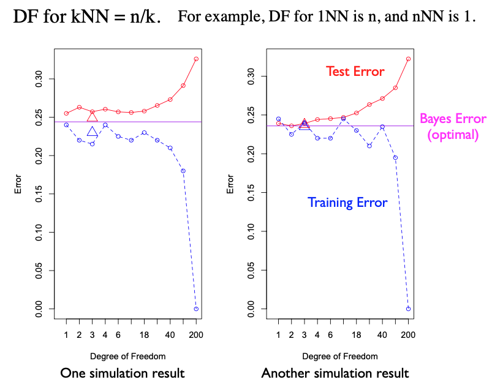
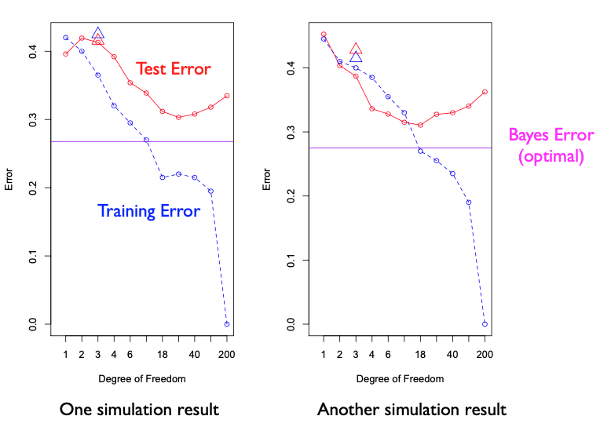

1.2.4. Discussion
On our code page, we provide scripts for data generation, performance evaluation for the k-nearest neighbor (kNN), linear regression, and the optimal Bayes rule. Additionally, we demonstrate how to create performance plots as displayed.
Example 1
Let’s look the performance plots derived from two datasets generated by Example 1. The x-axis represents the degree of freedom. T
{kind=link}
The red curve indicates the test error, while the blue dashed line indicates the training error, for different k values in kNN. For instance, k=1 corresponds to a DF of 200, and k=200 ccorresponds to a DF of 1. The blue dashed line indicates the training error for kNN.
The two triangles, red and blue, denote the test and training errors for the linear model, respectively. They are plotted at a DF of three because, in a two-dimensional setting like ours, the linear model requires estimation of two slope parameters and an intercept.
The purple line traces the Bayes error, a benchmark derived using the true data-generating process. There’s no training involved; we simply compute the Bayes error on the test data.
You may notice slight differences in the plots when datasets vary. Yet, some patterns persist. As complexity increases, training error generally reduces, while test error initially remains steady but rises due to over-fitting at advanced stages.
Interestingly, close examination reveals that the linear model and kNN with a small DF (or equivalently large k value), and the Bayes rule perform quite comparably. This suggests that the optimal decision rule is within the capacity of the linear model. The linear model’s ability to approximate the optimal Bayes rule is not unexpected. In fact, we have shown in previous section that the optimal decision boundary for Example 1 is indeed linear with respect to X.
Example 2
However, our second example tells a different story. Its performance plot reveals a wider gap between optimal performance and the linear model. This is attributed to the non-linear nature of the optimal decision rule for this example.
{kind=link}
For kNN, we notice a consistent pattern of declining training error as model complexity grows. It exhibits a U-shaped test error, indicating an optimal kNN somewhere within this curve. However, even for kNN, a gap exists between it and the optimal decision rule. For an in-depth discussion on this simulation study and comparisons between kNN and linear regression, refer to Chapter 2 of “Elements of Statistical Learning.”
While examining these performance plots, it’s important to be aware that the demonstrated effectiveness of kNN might be overstated. For instance, one might be tempted to point the test performance at k=7 (corresponding to DF = 29) as the performance of kNN, since it’s the smallest test error among all k choices. However, such an optimistic performance isn’t feasible in real-world applications, where the perfect k value would be unknown, given our lack of access to the test data.
A more realistic approach is to use cross-validation. Given a training dataset, various k values are tested and the corresponding cross-validation errors for each are recorded. These errors guide the selection of the optimal k value, which can then be employed to evaluate test errors. In your upcoming coding assignment, you will be asked to implement this cvKNN technique.
Summary
To summarize, linear regression operates on a strong linear assumption. In our simulation, where X is two-dimensional, we estimate only three parameters, leading to low variance for the linear regression model. However, it might possess high bias if the actual function isn’t linear.
On the other hand, kNN assumes only local smoothness, implying nearby points should yield similar responses. It generally has low bias and can fit many functions, making it consistent. For kNN to remain consistent, though, the neighborhood size (k) can’t remain constant; it must also grow, albeit at a slower rate than the sample size. This results in a high variance for kNN, but with proper bias and variance control, kNN can deliver excellent performance under the right conditions.